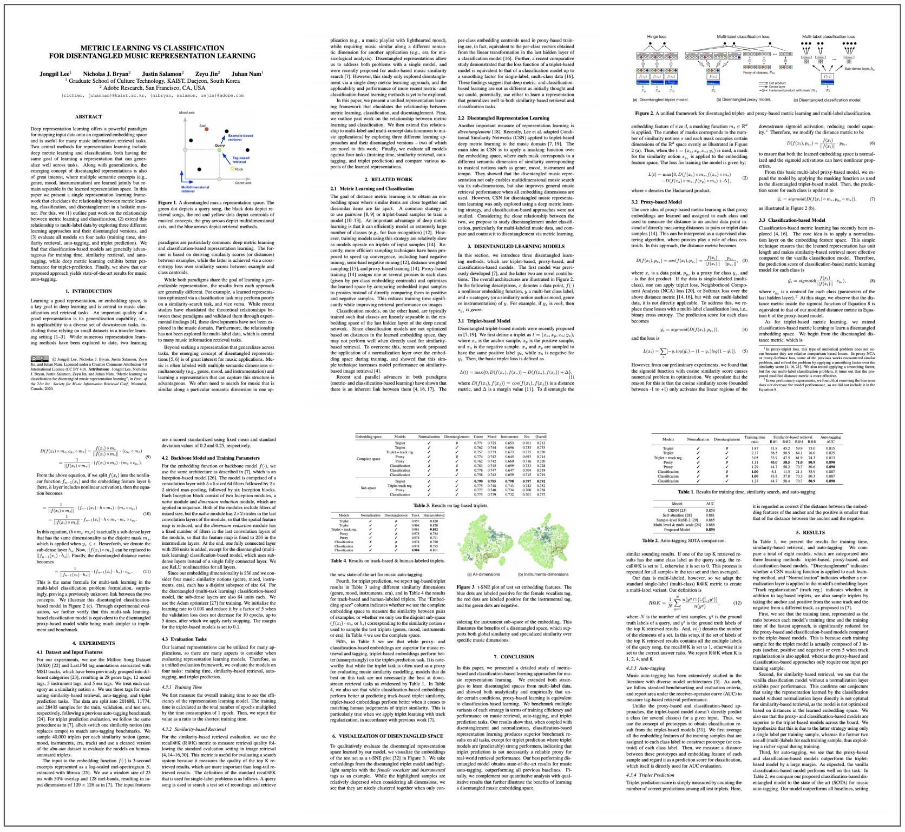

KAIST
Adobe Research
Adobe Research
Adobe Research
KAIST
Paper
Abstract
Deep representation learning offers a powerful paradigm for mapping input data onto an organized embedding space and is useful for many music information retrieval tasks. Two central methods for representation learning include deep metric learning and classification, both having the same goal of learning a representation that can generalize well across tasks. Along with generalization, the emerging concept of disentangled representations is also of great interest, where multiple semantic concepts (e.g., genre, mood, instrumentation) are learned jointly but remain separable in the learned representation space. In this paper we present a single representation learning framework that elucidates the relationship between metric learning, classification, and disentanglement in a holistic manner. For this, we (1) outline past work on the relationship between metric learning and classification, (2) extend this relationship to multi-label data by exploring three different learning approaches and their disentangled versions, and (3) evaluate all models on four tasks (training time, similarity retrieval, auto-tagging, and triplet prediction). We find that classification-based models are generally advantageous for training time, similarity retrieval, and auto-tagging, while deep metric learning exhibits better performance for triplet-prediction. Finally, we show that our proposed approach yields state-of-the-art results for music auto-tagging.
Read the Full Paper (arXiv)

Poster

BibTex
@inproceedings{lee2020metric,
title={Metric Learning vs Classification for Disentangled Music Representation Learning},
author={Lee, Jongpil and Bryan, Nicholas J. and Salamon, Justin and Jin, Zeyu, and Nam, Juhan},
booktitle={Proceedings of International Society for Music Information Retrieval (ISMIR)},
year={2020},
}